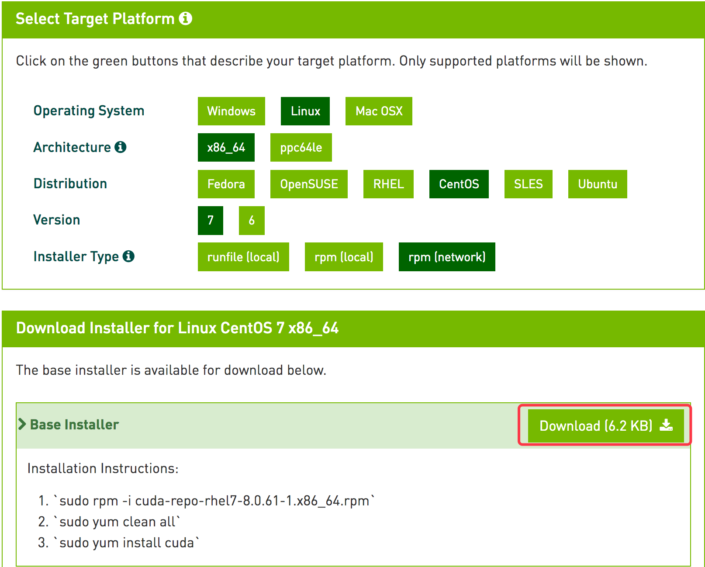
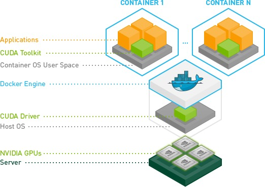

Docker 中玩转 GPU
1. GPU 驱动安装
在讲解 Docker 中使用 GPU 之前，需要先在当前宿主上安装好 CUDA，本文介绍的是基于 CentOS7 的安装，关于更多 Linux 的安装方法，可以参考官方文档 NVIDIA CUDA Installation Guide for Linux。
查看当前主机是否支持 GPU 设备：
# lspci | grep -i nvidia
# 显示当前主机有两个 GPU 设备
03:00.0 3D controller: NVIDIA Corporation Device 1b38 (rev a1)
82:00.0 3D controller: NVIDIA Corporation Device 1b38 (rev a1)
1.1. 下载 CUDA Toolkit 并安装
CUDA Toolkit Download 官网下载，选择所对应的版本

从上图中可以看到，官方也直接显示了 CUDA 的安装方式
rpm -ivh https://developer.download.nvidia.com/compute/cuda/repos/rhel7/x86_64/cuda-repo-rhel7-8.0.61-1.x86_64.rpm
yum clean all
yum install -y cuda
reboot // 安装完成之后重启系统
新建配置如下：
# cat /etc/profile.d/cuda.sh
# cuda
export PATH=/usr/local/cuda-8.0/bin:$PATH
export LD_LIBRARY_PATH=/usr/local/cuda-8.0/lib64:/usr/local/cuda-8.0/extras/CUPTI/lib64:$LD_LIBRARY_PATH
# source /etc/profile.d/cuda.sh
1.2. NVIDIA cuDNN Install
cuDNN 是专门针对深度框架设计的一套 GPU 计算加速方案，支持的框架包括 Caffe、TensorFlow 等，https://developer.nvidia.com/cuDNN （官网现在下载需要注册账户才能下载）
tar xf cudnn-8.0-linux-x64-v6.0-tgz
cd cuda
rsync -av include/* /usr/local/cuda/include/
rsync -av lib64/* /usr/local/cuda/lib64/
ldconfig
通过 nvidia-smi 可以查看 GPU 的一个基本情况：
# nvidia-smi
Fri Jul 14 23:19:38 2017
+-----------------------------------------------------------------------------+
| NVIDIA-SMI 375.51 Driver Version: 375.51 |
|-------------------------------+----------------------+----------------------+
| GPU Name Persistence-M| Bus-Id Disp.A | Volatile Uncorr. ECC |
| Fan Temp Perf Pwr:Usage/Cap| Memory-Usage | GPU-Util Compute M. |
|===============================+======================+======================|
| 0 Tesla P40 Off | 0000:03:00.0 Off | 0 |
| N/A 34C P0 51W / 250W | 165MiB / 22912MiB | 0% Default |
+-------------------------------+----------------------+----------------------+
| 1 Tesla P40 Off | 0000:82:00.0 Off | 0 |
| N/A 34C P0 50W / 250W | 9561MiB / 22912MiB | 0% Default |
+-------------------------------+----------------------+----------------------+
+-----------------------------------------------------------------------------+
| Processes: GPU Memory |
| GPU PID Type Process name Usage |
|=============================================================================|
| 0 76077 C python 161MiB |
| 1 42340 C /data/program/miniconda/envs/py35/bin/python 9559MiB |
+-----------------------------------------------------------------------------+
2. Docker 中访问 GPU
nvidia 官方提供了 nvidia-docker 可以直接驱动 GPU 设备，具体文档可以参考 nvidia-docker，本文介绍原生的 Docker 方式。

本文以 tensorflow/tensorflow:latest-gpu 测试：
# export DEVICES=$(\ls /dev/nvidia* | xargs -I{} echo '--device {}:{}')
# docker run -it --rm $DEVICES -v /usr/lib64/nvidia/:/usr/local/nvidia/lib64 tensorflow/tensorflow:latest-gpu bash
root@b37235b80e1a:/notebooks# python
Python 2.7.12 (default, Nov 19 2016, 06:48:10)
[GCC 5.4.0 20160609] on linux2
Type "help", "copyright", "credits" or "license" for more information.
>>> import tensorflow as tf
>>> a = tf.constant([1.0, 2.0, 3.0, 4.0, 5.0, 6.0], shape=[2, 3], name='a')
>>> b = tf.constant([1.0, 2.0, 3.0, 4.0, 5.0, 6.0], shape=[3, 2], name='b')
>>> c = tf.matmul(a, b)
>>> sess = tf.Session(config=tf.ConfigProto(log_device_placement=True))
2017-07-14 15:30:24.261480: I tensorflow/core/common_runtime/gpu/gpu_device.cc:1030] Creating TensorFlow device (/gpu:0) -> (device: 0, name: Tesla P40, pci bus id: 0000:03:00.0)
2017-07-14 15:30:24.261516: I tensorflow/core/common_runtime/gpu/gpu_device.cc:1030] Creating TensorFlow device (/gpu:1) -> (device: 1, name: Tesla P40, pci bus id: 0000:82:00.0)
Device mapping:
/job:localhost/replica:0/task:0/gpu:0 -> device: 0, name: Tesla P40, pci bus id: 0000:03:00.0
/job:localhost/replica:0/task:0/gpu:1 -> device: 1, name: Tesla P40, pci bus id: 0000:82:00.0
2017-07-14 15:30:24.263788: I tensorflow/core/common_runtime/direct_session.cc:265] Device mapping:
/job:localhost/replica:0/task:0/gpu:0 -> device: 0, name: Tesla P40, pci bus id: 0000:03:00.0
/job:localhost/replica:0/task:0/gpu:1 -> device: 1, name: Tesla P40, pci bus id: 0000:82:00.0
>>> print(sess.run(c))
... ...
[[ 22. 28.]
[ 49. 64.]]
通过官方的 tensorflow gpu 例子正常运行就表示，Docker 中可以正常的使用 GPU 了。
3. 通过 K8s 调度 GPU 资源
K8s 现在已经支持 GPU 的资源调度了，具体可以看官方的介绍 Schedule GPUs，这里介绍一个简单的实例。
当前 K8s 调度 GPU 还是实验性阶段，在 K8s 调度 GPU 之前需要提前做好以下几步：
- 安装 Nvidia 驱动
- kubelete 添加
-feature-gates="Accelerators=true"选项 - 必须是
docker engine运行环境
以下是一个 test-gpu.yaml pod 实例
apiVersion: v1
kind: Pod
metadata:
name: test-gpu
spec:
volumes:
- hostPath:
path: /usr/lib64/nvidia
name: lib
containers:
- env:
- name: TEST
value: "GPU"
imagePullPolicy: Always
name: gpu-container-1
image: tensorflow/tensorflow:latest-gpu
resources:
limits:
alpha.kubernetes.io/nvidia-gpu: 1
volumeMounts:
- mountPath: /usr/local/nvidia/lib64
name: lib
通过上述 Pod 实例，就可以跑通官方的 tensorflow gpu 镜像。不过，关于 K8s 调度 GPU 有以下几个问题需要注意：
- GPUs 只能通过
limits选项指定 - GPUs 是严格隔离的，不同容器之间不能共享
- 每个容器可以请求一个或多个 GPUs
- GPUs 只能正整数级请求
这种方式是严格的隔离，在实际的情况下 GPU 可能并不能充分利用。因此，可能不同的容器之间还是需要共享 GPU 资源，这个时候可以采用上文中 Docker 原生访问的方式。但是，K8s 当前还不支持 --device 选项，可以通过以下选项实现：
... ...
securityContext:
privileged: true
... ...